、 、
译者
@SeanCheney ：
自编码器是能够在无监督
相反
自编码器和 GAN 都是无监督的
-
自编码器是通过学习
， 。 ， 。 ， ， ， 。 ， 。 ， 。 -
GAN 包括两个神经网络
： ， 。 ， ： ， ， 。 （ ） ， 。 ， 。
本章中
有效的数据表征
以下哪一个数字序列更容易记忆
- 40, 27, 25, 36, 81, 57, 10, 73, 19, 68
- 50, 48, 46, 44, 42, 40, 38, 36, 34, 32, 30, 28, 26, 24, 22, 20, 18, 16, 14
乍一看
记忆
就像这个记忆实验中的象棋棋手一样
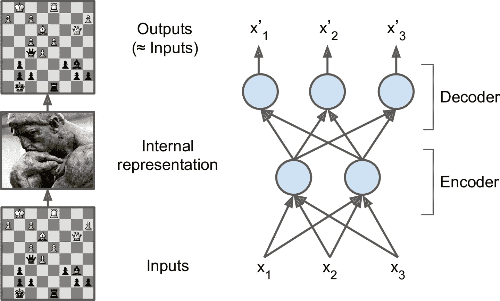
图 17-1 记忆象棋试验
如你所见
由于内部表征具有比输入数据更低的维度
我们来看看如何实现一个非常简单的不完整的自编码器
用不完整的线性自编码器来做 PCA
如果自编码器仅使用线性激活并且损失函数是均方误差
以下代码创建了一个简单的线性自编码器
from tensorflow import keras
encoder = keras.models.Sequential([keras.layers.Dense(2, input_shape=[3])])
decoder = keras.models.Sequential([keras.layers.Dense(3, input_shape=[2])])
autoencoder = keras.models.Sequential([encoder, decoder])
autoencoder.compile(loss="mse", optimizer=keras.optimizers.SGD(lr=0.1))
这段代码与我们在前面章节中创建的所有 MLP 没有什么大不同
-
自编码器由两部分组成
： 。 Sequential模型， ， Sequential模型（ ） 。 -
自编码器的输出等于输入
。 -
简单 PCA 不需要激活函数
（ ， ） ， 。 。
现在用生成出来的 3D 数据集训练模型
history = autoencoder.fit(X_train, X_train, epochs=20)
codings = encoder.predict(X_train)
注意X_train既用来做输入
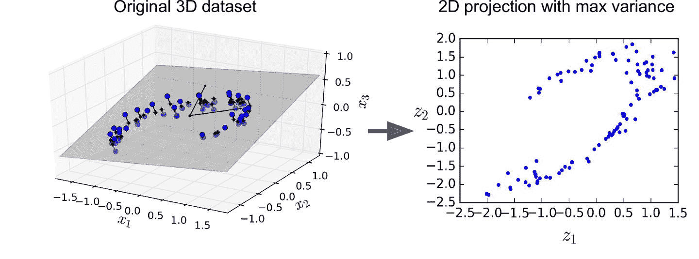
图 17-2 用不完整的线性自编码器实现 PCA
笔记
可以将自编码器当做某种形式的自监督学习 ： 带有自动生成标签功能的监督学习 （ 这个例子中标签等于输入 ， ）
栈式自编码器
就像我们讨论过的其他神经网络一样
栈式自编码器的架构以中央隐藏层
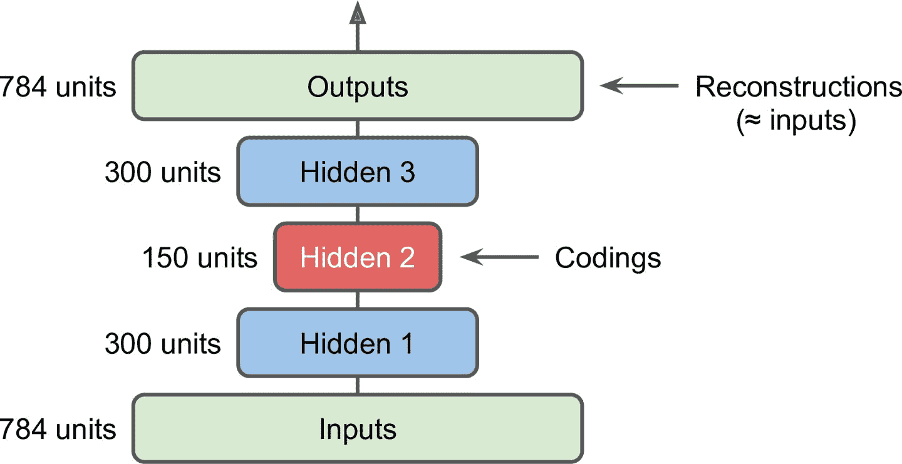
图 17-3 栈式自编码器
用 Keras 实现栈式自编码器
你可以像常规深度 MLP 一样实现栈式自编码器
stacked_encoder = keras.models.Sequential([
keras.layers.Flatten(input_shape=[28, 28]),
keras.layers.Dense(100, activation="selu"),
keras.layers.Dense(30, activation="selu"),
])
stacked_decoder = keras.models.Sequential([
keras.layers.Dense(100, activation="selu", input_shape=[30]),
keras.layers.Dense(28 * 28, activation="sigmoid"),
keras.layers.Reshape([28, 28])
])
stacked_ae = keras.models.Sequential([stacked_encoder, stacked_decoder])
stacked_ae.compile(loss="binary_crossentropy",
optimizer=keras.optimizers.SGD(lr=1.5))
history = stacked_ae.fit(X_train, X_train, epochs=10,
validation_data=[X_valid, X_valid])
逐行看下这个代码
-
和之前一样
， ： 。 -
编码器接收
28 × 28像素的灰度图片， ， ， （ ， ， ） 。 ， 。 -
解码器接收大小等于 30 的编码
（ ） ， ， 28 × 28的数组， 。 -
编译时
， ， 。 ： 。 （ ） ， 。 -
最后
， X_train既作为输入， ， （ ， X_valid既作为验证的输入也作为目标） 。
可视化重建
确保自编码器训练得当的方式之一
def plot_image(image):
plt.imshow(image, cmap="binary")
plt.axis("off")
def show_reconstructions(model, n_images=5):
reconstructions = model.predict(X_valid[:n_images])
fig = plt.figure(figsize=(n_images * 1.5, 3))
for image_index in range(n_images):
plt.subplot(2, n_images, 1 + image_index)
plot_image(X_valid[image_index])
plt.subplot(2, n_images, 1 + n_images + image_index)
plot_image(reconstructions[image_index])
show_reconstructions(stacked_ae)
图 17-4 展示了比较结果
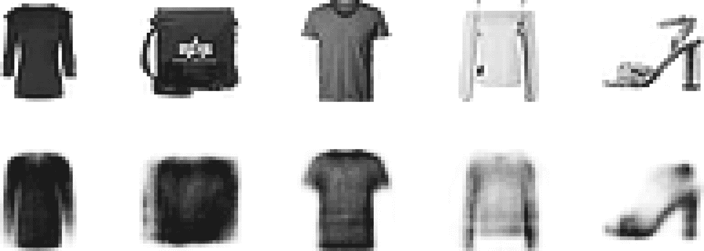
图 17-4 原始图片
可以认出重建
可视化 Fashion MNIST 数据集
训练好栈式自编码器之后
from sklearn.manifold import TSNE
X_valid_compressed = stacked_encoder.predict(X_valid)
tsne = TSNE()
X_valid_2D = tsne.fit_transform(X_valid_compressed)
对数据集作图
plt.scatter(X_valid_2D[:, 0], X_valid_2D[:, 1], c=y_valid, s=10, cmap="tab10")
图 17-5 展示了结果的散点图
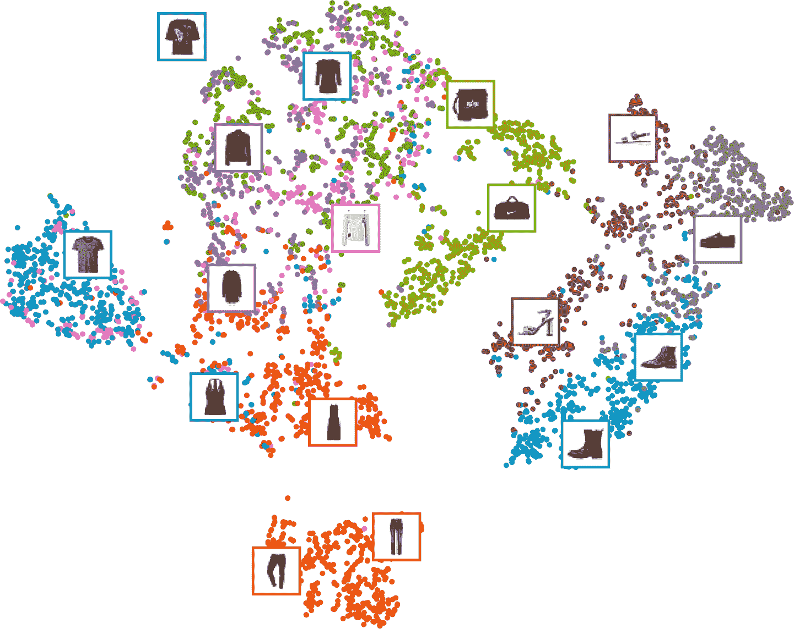
图 17-5 使用自编码器和 t-SNE 对 Fashion MNIST 做可视化
自编码器的另一个用途是无监督预训练
使用栈式自编码器做无监督预训练
第 11 章讨论过
相似的
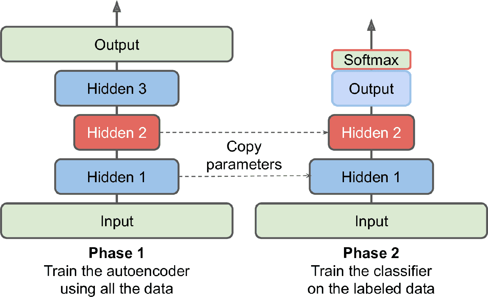
图 17-6 使用自编码器做无监督预训练
笔记
无标签数据很多 ： 有标签数据数据很少 ， 非常普遍 ， 搭建一个大无便签数据集很便宜 。 比如 （ 一段小脚本可以从网上下载许多图片 ， ） 但是给这些图片打标签 ， 比如 （ 将其标签为可爱或不可爱 ， 只有人做才靠谱 ） 打标签又耗时又耗钱 。 所以人工标注实例有几千就不错了 ， 。
代码实现没有特殊之处
接下来
关联权重
当自编码器整齐地对称时N个层W[L]表示第L层的连接权重N / 2是编码层N是输出层W[N–L+1] = W[L]^TL = 1, 2, ..., N/2
使用 Keras 将层的权重关联起来
class DenseTranspose(keras.layers.Layer):
def __init__(self, dense, activation=None, **kwargs):
self.dense = dense
self.activation = keras.activations.get(activation)
super().__init__(**kwargs)
def build(self, batch_input_shape):
self.biases = self.add_weight(name="bias", initializer="zeros",
shape=[self.dense.input_shape[-1]])
super().build(batch_input_shape)
def call(self, inputs):
z = tf.matmul(inputs, self.dense.weights[0], transpose_b=True)
return self.activation(z + self.biases)
自定义层的作用就像一个常规紧密层transpose_b=True等同于转置第二个参数matmul()运算中实时做转置更为高效
dense_1 = keras.layers.Dense(100, activation="selu")
dense_2 = keras.layers.Dense(30, activation="selu")
tied_encoder = keras.models.Sequential([
keras.layers.Flatten(input_shape=[28, 28]),
dense_1,
dense_2
])
tied_decoder = keras.models.Sequential([
DenseTranspose(dense_2, activation="selu"),
DenseTranspose(dense_1, activation="sigmoid"),
keras.layers.Reshape([28, 28])
])
tied_ae = keras.models.Sequential([tied_encoder, tied_decoder])
这个模型的重建误差小于前一个模型
一次训练一个自编码器
不是一次完成整个栈式自编码器的训练
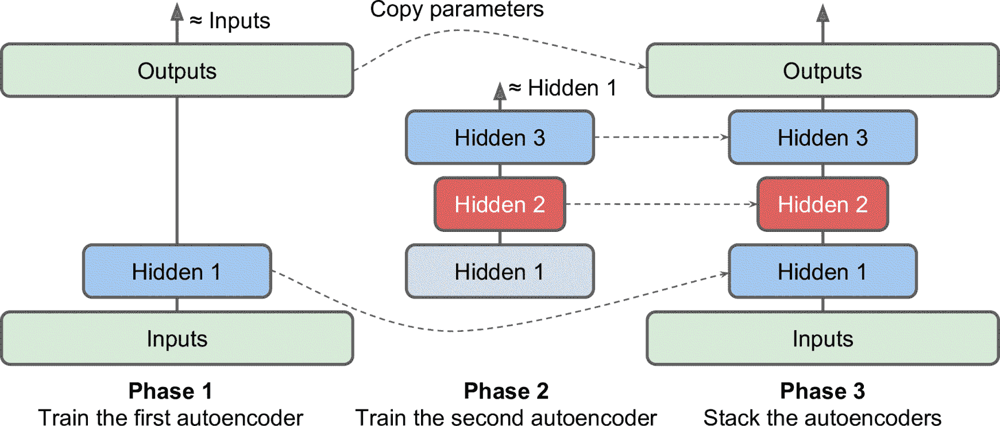
图 17-7 一次训练一个自编码器
在训练的第一阶段
正如前面讨论过的
自编码器不限于紧密网络
卷积自编码器
如果处理的是图片
conv_encoder = keras.models.Sequential([
keras.layers.Reshape([28, 28, 1], input_shape=[28, 28]),
keras.layers.Conv2D(16, kernel_size=3, padding="same", activation="selu"),
keras.layers.MaxPool2D(pool_size=2),
keras.layers.Conv2D(32, kernel_size=3, padding="same", activation="selu"),
keras.layers.MaxPool2D(pool_size=2),
keras.layers.Conv2D(64, kernel_size=3, padding="same", activation="selu"),
keras.layers.MaxPool2D(pool_size=2)
])
conv_decoder = keras.models.Sequential([
keras.layers.Conv2DTranspose(32, kernel_size=3, strides=2, padding="valid",
activation="selu",
input_shape=[3, 3, 64]),
keras.layers.Conv2DTranspose(16, kernel_size=3, strides=2, padding="same",
activation="selu"),
keras.layers.Conv2DTranspose(1, kernel_size=3, strides=2, padding="same",
activation="sigmoid"),
keras.layers.Reshape([28, 28])
])
conv_ae = keras.models.Sequential([conv_encoder, conv_decoder])
循环自编码器
如果你想用自编码器处理序列
recurrent_encoder = keras.models.Sequential([
keras.layers.LSTM(100, return_sequences=True, input_shape=[None, 28]),
keras.layers.LSTM(30)
])
recurrent_decoder = keras.models.Sequential([
keras.layers.RepeatVector(28, input_shape=[30]),
keras.layers.LSTM(100, return_sequences=True),
keras.layers.TimeDistributed(keras.layers.Dense(28, activation="sigmoid"))
])
recurrent_ae = keras.models.Sequential([recurrent_encoder, recurrent_decoder])
这个循环自编码器可以处理任意长度的序列RepeatVector
我们现在已经看过了多种自编码器
为了让自编码学习特征
降噪自编码
另一种强制自编码器学习特征的方法是为其输入添加噪声
噪声可以是添加到输入的纯高斯噪声
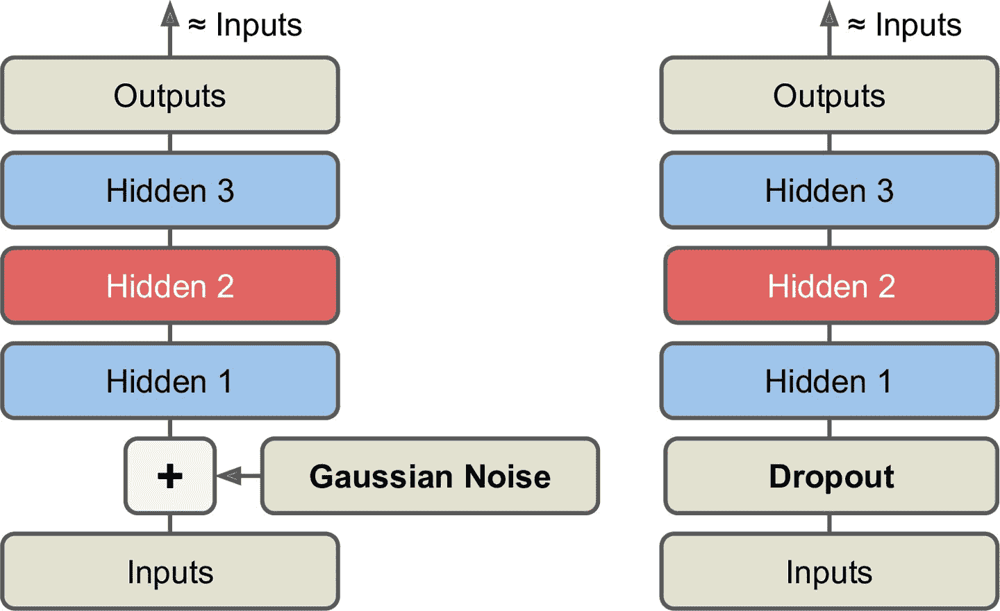
图 17-8 高斯噪音
实现很简单Dropout层GaussianNoise层Dropout层只在训练中起作用GaussianNoise层也只在训练中起作用
dropout_encoder = keras.models.Sequential([
keras.layers.Flatten(input_shape=[28, 28]),
keras.layers.Dropout(0.5),
keras.layers.Dense(100, activation="selu"),
keras.layers.Dense(30, activation="selu")
])
dropout_decoder = keras.models.Sequential([
keras.layers.Dense(100, activation="selu", input_shape=[30]),
keras.layers.Dense(28 * 28, activation="sigmoid"),
keras.layers.Reshape([28, 28])
])
dropout_ae = keras.models.Sequential([dropout_encoder, dropout_decoder])
图 17-9 展示了一些带有造影的图片
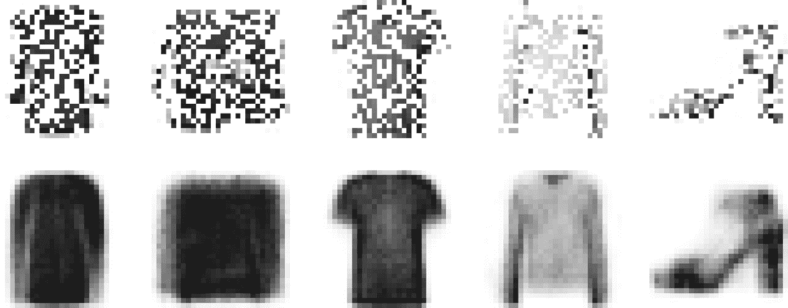
图 17-9 噪音图片
稀疏自编码器
通常良好特征提取的另一种约束是稀疏性
使用 sigmoid 激活函数可以实现这个目的ℓ1正则
sparse_l1_encoder = keras.models.Sequential([
keras.layers.Flatten(input_shape=[28, 28]),
keras.layers.Dense(100, activation="selu"),
keras.layers.Dense(300, activation="sigmoid"),
keras.layers.ActivityRegularization(l1=1e-3)
])
sparse_l1_decoder = keras.models.Sequential([
keras.layers.Dense(100, activation="selu", input_shape=[300]),
keras.layers.Dense(28 * 28, activation="sigmoid"),
keras.layers.Reshape([28, 28])
])
sparse_l1_ae = keras.models.Sequential([sparse_l1_encoder, sparse_l1_decoder])
ActivityRegularization只是返回输入ActivityRegularizationactivity_regularizer=keras.regularizers.l1(1e-3)ℓ2ℓ1
另一种结果更好的方法是在每次训练迭代中测量编码层的实际稀疏度
一旦我们对每个神经元进行平均激活(0.3-0.1)^2添加到损失函数中
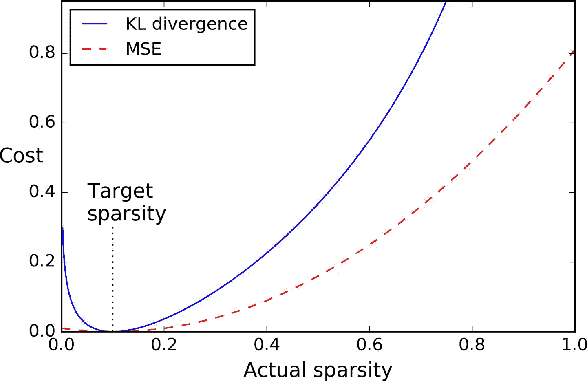
图 17-10 稀疏损失
给定两个离散的概率分布P和QD[KL](P || Q)
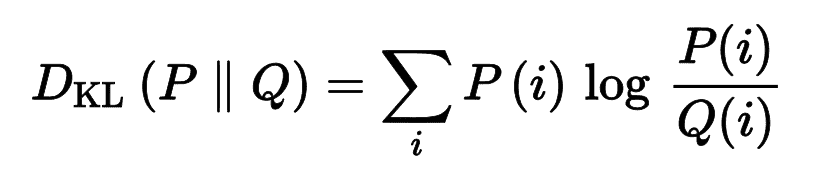
公式 17-1 Kullback–Leibler 散度
在我们的例子中p与实际概率q
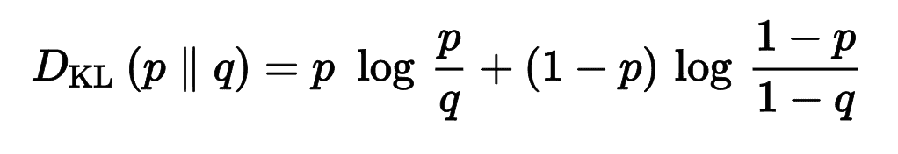
公式 17-2 目标稀疏度p和实际稀疏度q之间的 KL 散度
一旦我们已经计算了编码层中每个神经元的稀疏损失
现在就可以实现基于 KL 散度的稀疏自编码器了
K = keras.backend
kl_divergence = keras.losses.kullback_leibler_divergence
class KLDivergenceRegularizer(keras.regularizers.Regularizer):
def __init__(self, weight, target=0.1):
self.weight = weight
self.target = target
def __call__(self, inputs):
mean_activities = K.mean(inputs, axis=0)
return self.weight * (
kl_divergence(self.target, mean_activities) +
kl_divergence(1\. - self.target, 1\. - mean_activities))
使用KLDivergenceRegularizer作为编码层的激活函数
kld_reg = KLDivergenceRegularizer(weight=0.05, target=0.1)
sparse_kl_encoder = keras.models.Sequential([
keras.layers.Flatten(input_shape=[28, 28]),
keras.layers.Dense(100, activation="selu"),
keras.layers.Dense(300, activation="sigmoid", activity_regularizer=kld_reg)
])
sparse_kl_decoder = keras.models.Sequential([
keras.layers.Dense(100, activation="selu", input_shape=[300]),
keras.layers.Dense(28 * 28, activation="sigmoid"),
keras.layers.Reshape([28, 28])
])
sparse_kl_ae = keras.models.Sequential([sparse_kl_encoder, sparse_kl_decoder])
在 Fashion MNIST 上训练好稀疏自编码器之后
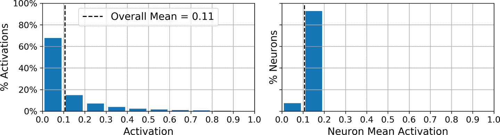
图 17-11 编码层的所有激活的分布
（ ） （ ）
Diederik Kingma 和 Max Welling 于 2013 年推出了另一类重要的自编码器
它与我们迄今为止讨论的所有自编码器非常不同
-
它们是概率自编码器
， ， （ ） 。 -
最重要的是
， ， 。
这两个属性使它们与 RBM 非常相似
我们来看看他们是如何工作的μ和标准差σμ和标准差σ的高斯分布随机采样实际编码μ和σμ处
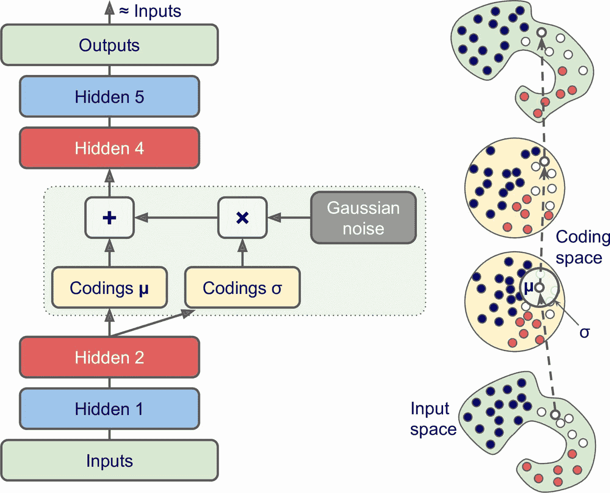
图 17-12 变分自编码器
从图中可以看出
再来看看损失函数
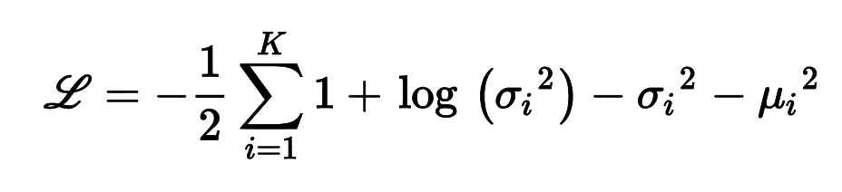
公式 17-3 变分自编码器的潜在损失
在这个公式中L是潜在损失n是编码维度μ[i]和σ[i]是编码的第i个成分的平均值和标准差μ和σ是编码器的输出
一种常见的变体是训练编码器输出γ= log(σ^2)而不是σ
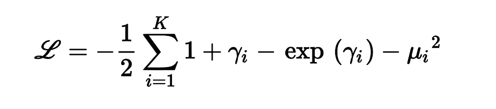
公式 17-4 变分自编码器的潜在损失γ = log(σ^2)
给 Fashion MNIST 创建一个自编码器γ变体μ和γ
class Sampling(keras.layers.Layer):
def call(self, inputs):
mean, log_var = inputs
return K.random_normal(tf.shape(log_var)) * K.exp(log_var / 2) + mean
这个Sampling层接收两个输入mean (μ) 和 log_var (γ)K.random_normal()根据正态分布随机采样向量γexp(γ / 2)σ
然后
codings_size = 10
inputs = keras.layers.Input(shape=[28, 28])
z = keras.layers.Flatten()(inputs)
z = keras.layers.Dense(150, activation="selu")(z)
z = keras.layers.Dense(100, activation="selu")(z)
codings_mean = keras.layers.Dense(codings_size)(z) # μ
codings_log_var = keras.layers.Dense(codings_size)(z) # γ
codings = Sampling()([codings_mean, codings_log_var])
variational_encoder = keras.Model(
inputs=[inputs], outputs=[codings_mean, codings_log_var, codings])
注意codings_mean (μ)和codings_log_var (γ)的Dense层codings_mean和codings_log_var传给Sampling层variational_encoder模型有三个输出codings_mean和codings_log_var的值codings
decoder_inputs = keras.layers.Input(shape=[codings_size])
x = keras.layers.Dense(100, activation="selu")(decoder_inputs)
x = keras.layers.Dense(150, activation="selu")(x)
x = keras.layers.Dense(28 * 28, activation="sigmoid")(x)
outputs = keras.layers.Reshape([28, 28])(x)
variational_decoder = keras.Model(inputs=[decoder_inputs], outputs=[outputs])
对于解码器
_, _, codings = variational_encoder(inputs)
reconstructions = variational_decoder(codings)
variational_ae = keras.Model(inputs=[inputs], outputs=[reconstructions])
注意
latent_loss = -0.5 * K.sum(
1 + codings_log_var - K.exp(codings_log_var) - K.square(codings_mean),
axis=-1)
variational_ae.add_loss(K.mean(latent_loss) / 784.)
variational_ae.compile(loss="binary_crossentropy", optimizer="rmsprop")
我们首先用公式 17-4 计算批次中每个实例的潜在损失"binary_crossentropy"损失时
注意RMSprop优化器
history = variational_ae.fit(X_train, X_train, epochs=50, batch_size=128,
validation_data=[X_valid, X_valid])
生成 Fashion MNIST 图片
接下来用上面的变分自编码器生成图片
codings = tf.random.normal(shape=[12, codings_size])
images = variational_decoder(codings).numpy()
图 17-13 展示了 12 张生成的图片
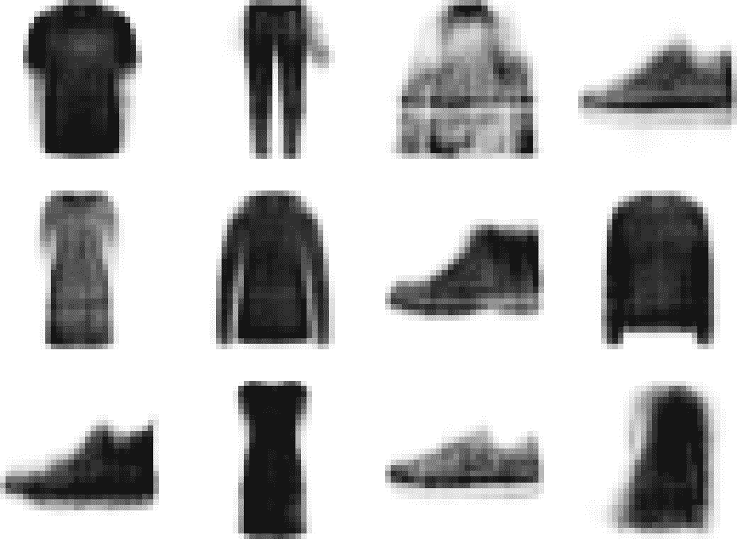
图 17-13 用变分自编码器生成的 Fashion MNIST 图片
大多数生成的图片很逼真
变分自编码器也可以做语义插值3 × 4的网格tf.image.resize()函数5 × 7resize()函数会做双线性插值
codings_grid = tf.reshape(codings, [1, 3, 4, codings_size])
larger_grid = tf.image.resize(codings_grid, size=[5, 7])
interpolated_codings = tf.reshape(larger_grid, [-1, codings_size])
images = variational_decoder(interpolated_codings).numpy()
图 17-14 展示了结果
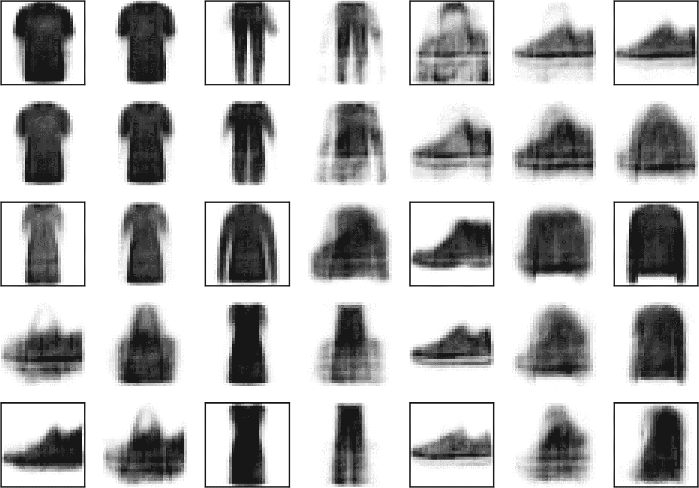
图 17-14 语义插值
变分自编码器流行几年之后
（ ） （ ）
对抗生成网络是 Ian Goodfellow 在 2014 年的一篇论文中提出的
-
生成器
使用随机分布作为输入（ ） ， ， 。 （ ， ） 。 ， （ ， ） 。 ， 。 -
判别器
从训练集取出一张图片， 。
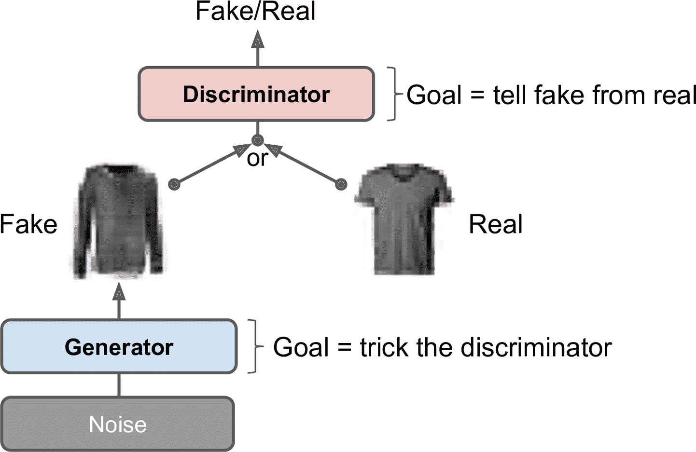
图 17-15 一个对抗生成网络
在训练中
-
第一个阶段
， 。 ， 。 ， ， ， 。 。 -
第二个阶段
， 。 ， 。 ， （ ） ： ， 。 ， 。
笔记
生成器看不到真图 ： 但却逐渐生成出逼真的不骗 ， 它只是使用了经过判别器返回的梯度 。 幸好 。 随着判别器的优化 ， 这些二手梯度中包含的关于真图的信息也越来越多 ， 所以生成器才能进步 ， 。
接下来为 Fashion MNIST 创建一个简单的 GAN 模型
首先
codings_size = 30
generator = keras.models.Sequential([
keras.layers.Dense(100, activation="selu", input_shape=[codings_size]),
keras.layers.Dense(150, activation="selu"),
keras.layers.Dense(28 * 28, activation="sigmoid"),
keras.layers.Reshape([28, 28])
])
discriminator = keras.models.Sequential([
keras.layers.Flatten(input_shape=[28, 28]),
keras.layers.Dense(150, activation="selu"),
keras.layers.Dense(100, activation="selu"),
keras.layers.Dense(1, activation="sigmoid")
])
gan = keras.models.Sequential([generator, discriminator])
然后gan模型也是一个二元分类器
discriminator.compile(loss="binary_crossentropy", optimizer="rmsprop")
discriminator.trainable = False
gan.compile(loss="binary_crossentropy", optimizer="rmsprop")
笔记
Keras 只有在编译模型时才会考虑 ： trainable属性所以运行这段代码后 ， 如果调用 ， fit()方法或train_on_batch()方法， discriminator就是可训练的了但在 。 gan模型上调用这些方法判别器是不可训练的 ， 。
因为训练循环是非常规的fit()方法Dataset迭代这些图片
batch_size = 32
dataset = tf.data.Dataset.from_tensor_slices(X_train).shuffle(1000)
dataset = dataset.batch(batch_size, drop_remainder=True).prefetch(1)
现在就可以来写训练循环了train_gan()函数来包装
def train_gan(gan, dataset, batch_size, codings_size, n_epochs=50):
generator, discriminator = gan.layers
for epoch in range(n_epochs):
for X_batch in dataset:
# phase 1 - training the discriminator
noise = tf.random.normal(shape=[batch_size, codings_size])
generated_images = generator(noise)
X_fake_and_real = tf.concat([generated_images, X_batch], axis=0)
y1 = tf.constant([[0.]] * batch_size + [[1.]] * batch_size)
discriminator.trainable = True
discriminator.train_on_batch(X_fake_and_real, y1)
# phase 2 - training the generator
noise = tf.random.normal(shape=[batch_size, codings_size])
y2 = tf.constant([[1.]] * batch_size)
discriminator.trainable = False
gan.train_on_batch(noise, y2)
train_gan(gan, dataset, batch_size, codings_size)
和前面讨论的一样
-
在第一阶段
， ， 。 y1设为 0， y1设为 1。 。 ， trainable属性设为True： False而在训练时为True， 。 -
在第二阶段
， 。 ， 。 ， y2设为 1。 ， ， trainable属性设为False。
这样就好了
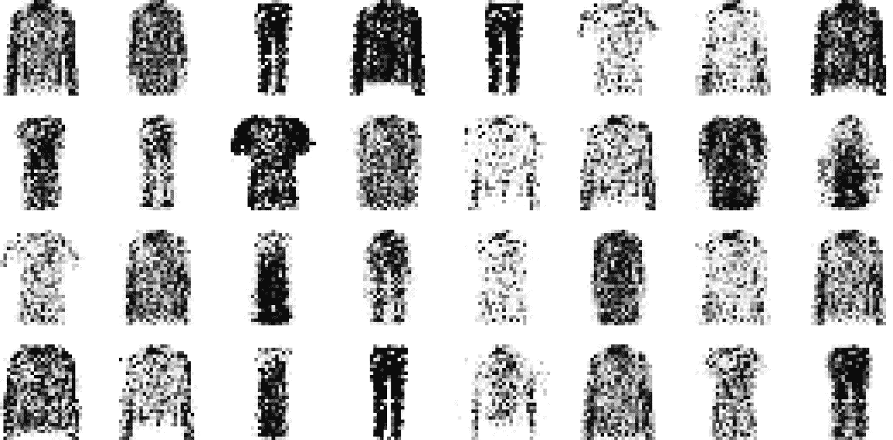
图 17-16 GAN 训练一个周期后
不过
训练 GAN 的难点
在训练中
如何将博弈论应用到 GAN 上呢
最大的困难是模式坍塌
另外
这些问题自从 2014 年就一直困扰着人们
总而言之
深度卷积 GAN
2014 年的原始 GAN 论文是用卷积层实验的
-
（ ） （ ） 、 （ ） ， 。 -
生成器和判别器都使用批归一化
， 。 -
去除深层架构中的全连接隐藏层
。 -
生成器的输出层使用 tanh 激活
， 。 -
判别器的所有层使用 leaky ReLU 激活
。
这些建议在许多任务中有效
codings_size = 100
generator = keras.models.Sequential([
keras.layers.Dense(7 * 7 * 128, input_shape=[codings_size]),
keras.layers.Reshape([7, 7, 128]),
keras.layers.BatchNormalization(),
keras.layers.Conv2DTranspose(64, kernel_size=5, strides=2, padding="same",
activation="selu"),
keras.layers.BatchNormalization(),
keras.layers.Conv2DTranspose(1, kernel_size=5, strides=2, padding="same",
activation="tanh")
])
discriminator = keras.models.Sequential([
keras.layers.Conv2D(64, kernel_size=5, strides=2, padding="same",
activation=keras.layers.LeakyReLU(0.2),
input_shape=[28, 28, 1]),
keras.layers.Dropout(0.4),
keras.layers.Conv2D(128, kernel_size=5, strides=2, padding="same",
activation=keras.layers.LeakyReLU(0.2)),
keras.layers.Dropout(0.4),
keras.layers.Flatten(),
keras.layers.Dense(1, activation="sigmoid")
])
gan = keras.models.Sequential([generator, discriminator])
生成器的编码大小为 1007 * 7 * 1287 × 7 × 128的张量7 × 7上采样为14 × 147 × 7上采样为14 × 14
X_train = X_train.reshape(-1, 28, 28, 1) * 2\. - 1\. # 变形和收缩
判别器看起来很像英语二元分类的常规 CNN
总之BatchNormalization替换成了Dropout层
最后
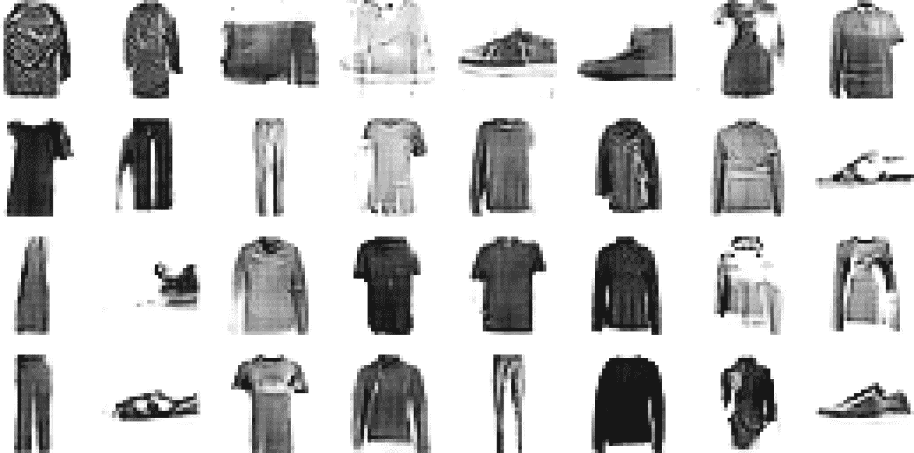
图 17-17 DCGAN 经过 50 个周期的训练
如果扩大这个架构3 × 3网格的正中的图片
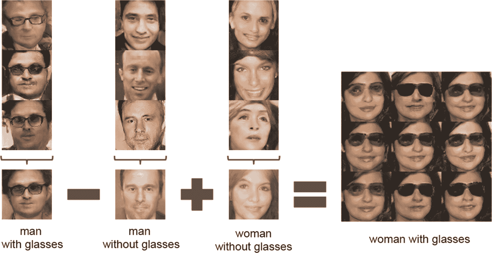
图 17-18 面部的向量运算
提示
如果将图片的类作为另一个输入 ： 输入给生成器和判别器 ， 它们都能学到每个类的样子 ， 你就可以控制生成器产生图片的类 ， 这被称为条件 GAN 。 CGAN （ ） 。
但是
GAN 的渐进式变大
Nvidia 研究员 Tero Karras 等人在 2018 年发表了一篇论文4 × 4, 8 × 8, 16 × 16, …, 512 × 512, 1,024 × 1,024
例如4 × 4变为4 × 4时4 × 4的特征映射same填充8 × 84 × 4的特征映射1-αα逐渐从 0 变为 1
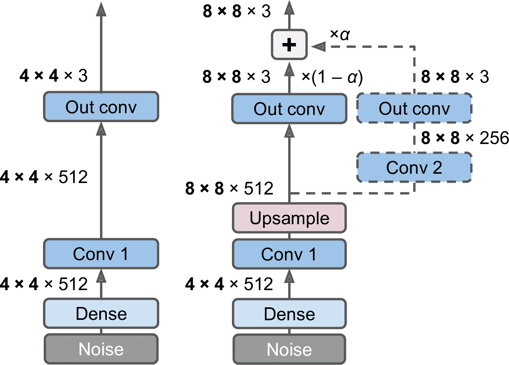
图 17-19 GAN 的渐进式变大4 × 4的彩色图片4 × 4的图片
这篇文章还提出了一些其它的方法
-
小批次标准差层
添加在判别器的靠近末端的位置
。 ， （ S = tf.math.reduce_std(inputs, axis=[0, -1])） ， 。 ， ， （ v = tf.reduce_mean(S)） 。 ， ， （ tf.concat([inputs, tf.fill([batch_size, height, width, 1], v)], axis=-1)） 。 ？ ， 。 ， 。 ， 。 -
相等的学习率
使用一个简单的高斯分布
（ ， ） ， 。 ， （ ， ） ： √(2/n_inputs)， n_inputs是层的输入数。 ， 、 。 ， （ ） ， ， ， 。 ， ， 。 ， 。 -
像素级归一化层
生成器的每个卷积层之后添加
。 ， ， （ ） 。 ， inputs / tf.sqrt(tf.reduce_mean(tf.square(X), axis=-1, keepdims=True) + 1e-8)（ 1e-8用于避免零除） 。 。
使用所有这些方法
StyleGAN
相同的 Nvidia 团队在 2018 年的一篇论文中提出了高性能的高清图片生成架构
-
映射网络
一个八层的 MLP
， z（ ， ） w。 （ ， ， ） ， 。 ， （ ， ） （ ， ） 。 ， 。 -
合成网络
负责生成图片
。 （ ， ） 。 ， ， ： ， （ ） 。 ， （ ） ： （ ， ） ， （ ） 。
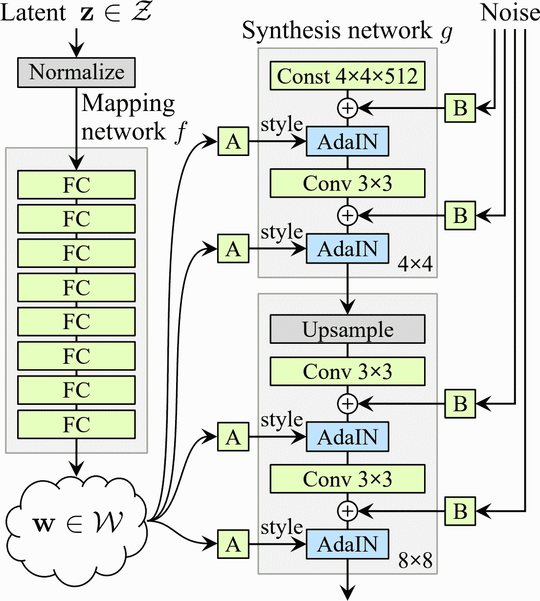
图 17-20 StyleGAN 的生成器架构
在编码层独立添加噪音非常重要
添加的噪音在每个级别都不同
最后c[1]和c[2]发送给映射网络w[1]和w[2]w[1]生成第一级w[2]生成其余的
GAN 的种类如此之多
下一章会介绍深度学习的另一领域
练习
-
自编码器主要用来做什么
？ -
假设你想训练一个分类器
， ， 。 ？ -
如果自编码器完美重建了输入
， ？ ？ -
自编码器的欠完成和过完成是什么
？ ？ ？ -
如何将栈式自编码器的权重连起来
？ ？ -
什么是生成式模型
？ ？ -
GAN 是什么
？ ？ -
训练 GAN 的难点是什么
？ -
用去噪音自编码器预训练一个图片分类器
。 ， ， 。 ， ： -
将数据集分成训练集和测试集
。 ， 。 -
检查图片正确重建了
。 。 -
搭建一个分类 DNN
， 。 。 ？
-
-
用刚才选择的数据集
， 。 。 ， ， 。 -
训练一个 DCGAN 来处理选择的数据集
， 。 ， 。 ， 。
参考答案见附录 A